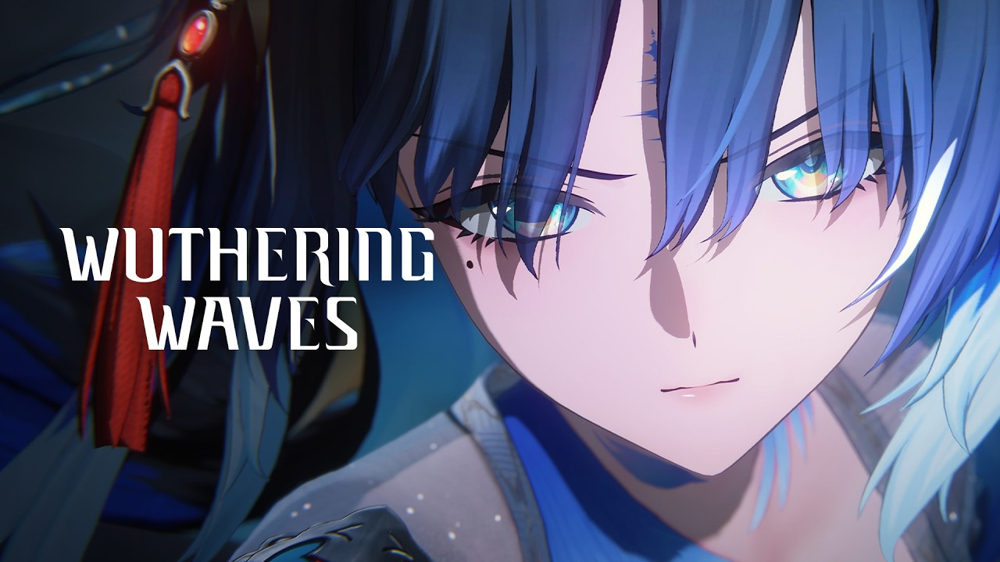

Panduan Wuthering Waves
Panduan lengkap Wuthering Waves: sistem Convene dengan pity 80 pull, farming Echo, rotasi karakter, dan strategi Astrite.

📄 Ringkasan Cepat
📜 Informasi Dasar
| Developer | Kuro Games |
|---|---|
| Genre | Action RPG, Open World |
| Rilis | 22 April 2024 |
| Platform | PC, Android, iOS, PS5 |
| Model | Free-to-play dengan microtransaction |
| Website resmi | https://wutheringwaves.kurogames.com/en/ |
⚙ Syarat Sistem
HP kelas menengah masih bisa, tapi PC jauh lebih nyaman karena frame rate lebih stabil.
Penyimpanan sekitar 30 GB, dan game ini butuh koneksi internet yang stabil.
- Android 7.0 ke atas, iOS 14 ke atas, atau PS5.
- PC: Windows 10/11 64-bit, SSD disarankan supaya loading tidak sering freeze.
- Setel Frame Rate ke 60 untuk HP, dan matikan efek mahal kalau fps sering drop.
🎲 Sistem Convene dan Pity
Sistem gacha di Wuthering Waves bernama Convene. Bedanya dengan Genshin, batas pity-nya lebih pendek, yaitu 80 pull untuk semua banner.
Base rate untuk 5-star adalah 0,8 persen per pull. Soft pity mulai naik sekitar pull 65 sampai 70, dan di pull ke-80 kamu dijamin dapat 5-star.
Banner karakter punya mekanisme 50/50 seperti Genshin. Banner weapon berbeda, karena di sana 5-star yang didapat selalu dijamin menjadi weapon yang dibannerkan.
- Hard pity 80 pull untuk banner karakter maupun weapon. Ini lebih singkat dari Genshin yang 90 pull.
- Base rate 5-star 0,8 persen, sedikit lebih tinggi dari Genshin yang 0,6 persen.
- Soft pity mulai sekitar pull 65 sampai 70.
- Banner weapon tidak punya 50/50. Pull weapon selalu dijamin dapat yang dibannerkan.
- Satu kali Convene memakai 160 Astrite.
🔍 Echo dan Farming
Echo adalah sistem inti di Wuthering Waves. Echo yang di-capture di dunia terbuka bisa menyumbang stat ke karakter, dan Echo S-Class punya set bonus yang menentukan kekuatan build. Karena itu farming Echo adalah aktivitas harian paling penting, bukan sekadar menaikkan level karakter.
Karena itu farming Echo adalah aktivitas harian paling penting, bukan sekadar Grind LEVEL angka biasa.
- Echo S-Class punya 5 set bonus. Setiap Resonator hanya bisa aktifkan satu set.
- Pastikan Echo selalu punya 4 sub-stat utama yang sesuai sebelum di-upgrade. Jangan asal upgrade.
- Pakai fitur Tuner Tuning untuk memfilter Echo berdasarkan sub-stat sekaligus mendapatkan Echo langka tanpa perlu farming manual.
- Gunakan Echo Tower untuk Grim Echo dan Echo yang langka bisa langsung di-set di sana.
- Daily Training di Tower of Adversity adalah sumber Echo yang stabil.
⚔ Tips Battle dan Rotasi
Combat Wuthering Waves berlangsung jauh lebih cepat dibanding game HoYoverse. Karena itu rotasi karakter yang tepat memberi hasil jauh lebih baik dibanding stats tinggi.
Karakter dengan elemen berbeda sering saling melengkapi karena bonus status elemen bisa menumpuk di dalam satu tim.
- Karakter Aero cocok untuk buff damage karakter lain sekaligus mengurangi recovery HP.
- Karakter Spectro menghasilkan damage besar dan sering jadi pilihan awal yang kuat untuk pemain baru.
- Gunakan Intro Skill atau Outro Skill sesuai urutan, jangan sampai durasinya habis.
- Bawa karakter support untuk restore HP. Battle tanpa heal akan terasa jauh lebih lambat.
- Burst energy dipakai untuk tombol damage besar, bukan untuk heal. Gauge yang habis sering jadi masalah utama di boss fight.
🌱 Astrite dan Mata Uang
Astrite adalah mata uang untuk Convene, dan ini yang paling sering jadi masalah pemain gratis karena kemajuannya lambat.
Perhatikan bahwa Astrite dibatasi per minggu, bukan per hari.
- Ada batasOTAL Astrite per minggu, jadiVuCollecting harus dijadwalkan dengan panjang.
- Prioritaskan sources yang free dan repeatable: daily, weekly, dan battle pass gratis.
- Jangan tukar semua Astrite sekaligus. Simpan untuk banner karakter, bukan banner weapon.
❌ Kesalahan yang Sering Terjadi
Pemain baru Wuthering Waves sering terjebak pola yang sama: farming Echo dengan cara yang tidak efisien.
Kabar baiknya, semua kesalahan ini bisa diperbaiki dengan mengubah kebiasaan.
- Upgrade Echo tanpa memeriksa sub-stat. Ini kesalahan paling umum dan paling mahal.
- Taruh dua set bonus berbeda sekaligus. Ingat, satu Resonator hanya mengaktifkan satu set.
- Beralih karakter terlalu sering tanpa menyelesaikan satu build sampai selesai.
- Mengabaikan daily dan weekly, lalu bingung kenapa Astrite tidak cukup.
- Tertarik event tanpa menyimpan cukup Astrite. Tunggu IMP bola juga.
Catatan: angka pity, jadwal, dan mekanisme di halaman ini bisa berubah setelah patch. Cek pengumuman resmi bila perlu informasi paling mutakhir.